Responsive Web Design Workshop
Set up your computer for today
Download the files for today's exercises: gdila.github.io/gdi-responsive/intro-rwd-exercises/introw-rwd-exercises.zip
Follow along with the slides at:
gdila.github.io/gdi-responsive
Meet Your Instructors!
Aisha Blake
- Front-end web developer
- Teacher of adults and children alike
- Co-organizer of GDI Detroit
- Dog enthusiast
- Coding boot camp curriculum writer
- Twitter: @AishaBlake
- E-mail: aisha.g.blake@gmail.com
Meet Your Instructors!
Leeann Drees
- Front-end web developer & WordPress specialist
- Chapter Leader with GDI Detroit
- Co-founder of ellell.co
- Friend of all furry critters!
- Twitter: @LeeannDrees
- E-mail: leeann@girldevelopit.com
Now we wanna know about you!
- What's your name?
- What is your go-to karaoke song?
Bad user experiences are sad.
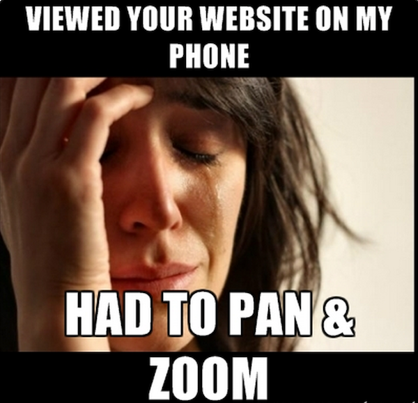Responsive Design gets it.
And it's here to make things right.
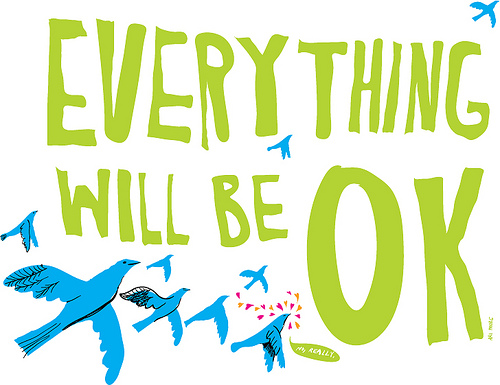
Today we will:
- Make things right by “responsivising” a fixed-width website
- Do math and like it :-)
- Explore frameworks and design tools that help us plan for responsive
- Learn some best practices
What exactly is Responsive Design?
Responsive Design is the practice of designing and developing websites that allow the user to enjoy its features no matter what device they're viewing it on.

Responsive's roots
Responsive Web Design was first coined by Ethan Marcotte in the May 2010 issue of A List Apart.
He also wrote this very nice book and owns the website Responsivewebdesign.com, which are both excellent resources.
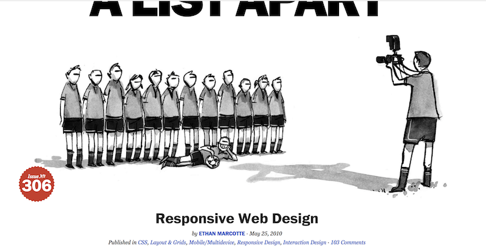Why does Responsive matter?
There are 1.75 Billion smartphone users worldwide.
91% of smartphone users in the U.S. have their smart phone within reach 24/7.
And many of them are checking their phones an average of 150x every day.
25% of smartphone users in the U.S. don't even own a laptop or desktop computer.
And because...
Mobile web usage will surpass desktop internet usage by 2015.
So... that's already happened!
Our phones ARE our computers.
Is your favorite website responsive?
You can enter the URL here: http://www.responsinator.com
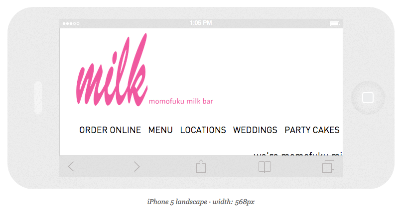 (or pull it up on your mobile device for a more accurate view!)A few devices to consider

(these are just Android phone, tablets, phablets. Here are the rest.)
Right?

Responsive is our solution for this madness
The magic is achieved with these 3 ingredients:
- fluid grids
- flexible images
- CSS3 media queries
1. Fluid Grids
First we define a width for our grid's container.
We divide the content up into a set of columns, usually 12.
Then we design elements that can scale in size. Instead of assigning a specific pixel dimension, we use percentages.
Whenever the device width changes, the grids change in width to scale with the device.
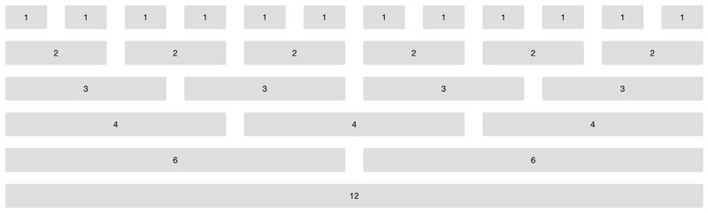2. Flexible Images
Here are some examples:
max-width- SVG (scalable vector graphics)
- icon fonts
srcset- list multiple image filessizes- give the browser multiple possible widths with media conditionspicture- gives us more control over when different sources are usedsource- used to define sources for a picture element
2. Flexible Images
We could have an entire workshop just on flexible images alone!
So, we won't be discussing all of those options tonight, but this article does a great job of detailing them.
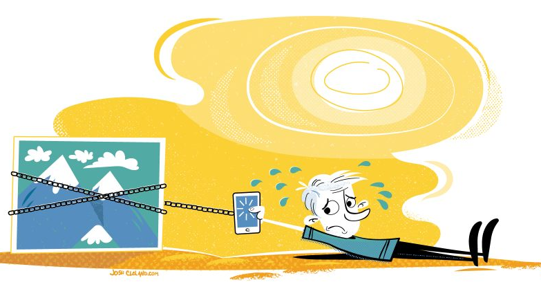2. Flexible Images: max-width
For now, we'll be using max-width.
2. Flexible Images: max-width
Unlike text, which scales easily on smaller devices, images can be a bit tricky.
Unless we give them a max-width, images will overflow their container elements if they're too big for them.
2. Flexible Images: max-width
By assigning a max-width to images, they'll only expand to the size of their parent.
If their parent has no width (which it probably does), it'll just expand to the width of the viewport.

3. CSS3 Media Queries
CSS3 media queries let us assign breakpoints that correspond to the pixel width of your desktop monitor, tablet, e-reader, or phone display.
These breakpoints tell the content what to do when the display (or viewport) falls within these widths.

A Clever Example of Media Queries
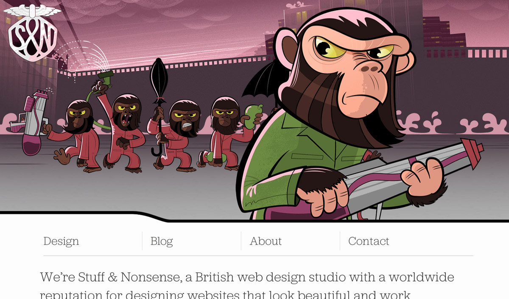Let's take a peek at some awesomeness
Let's go to our Exercise folder, find the _MediaQueryMagic folder, and open awesomeness.html in our browser.
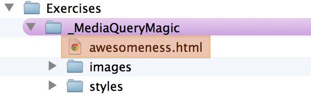Then let's go to our styles folder and open styles.css in Sublime Text.
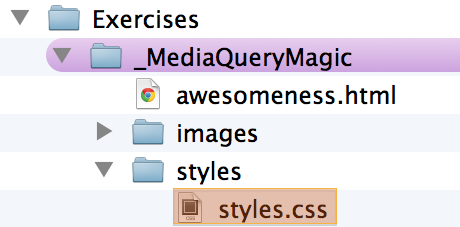Let's take a peek at some awesomeness
We can see the breakpoints and styles assigned to this page in our media queries as we narrow our browser window.
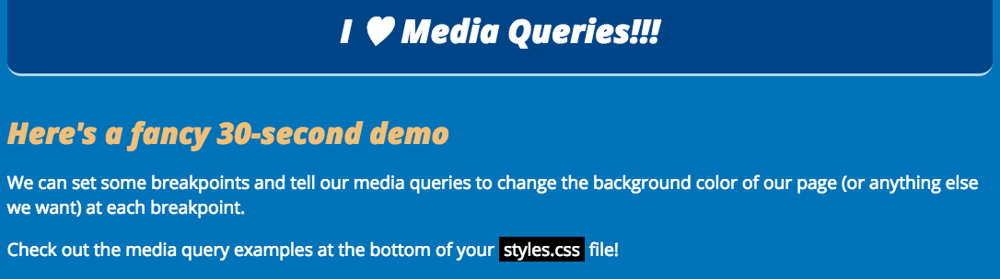 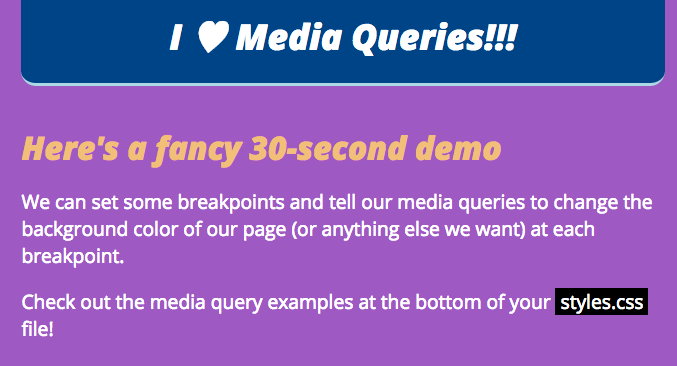 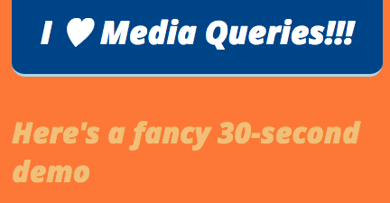The website we'll be working with next
Let's open "working.html" in our browser.
Not Responsive :-(
What if we don't want to start all over and make a totally new responsive site? We just want to make the existing site responsive.
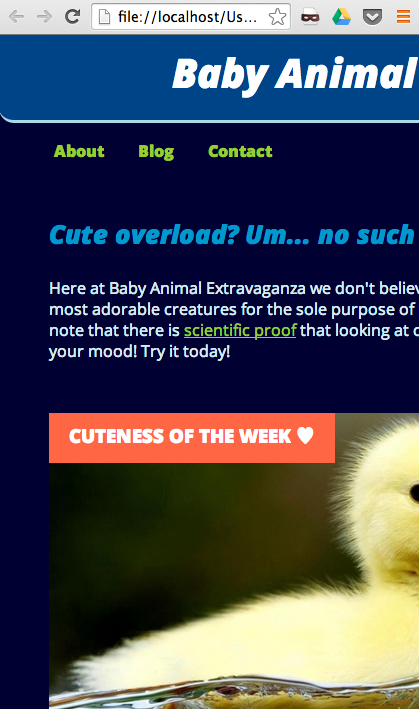Making it Responsive
We can totally make the following adjustments and get this site looking lovely on a mobile device:
- change up our font units
- make the existing grid fluid
- add CSS3 media queries
This will suit our needs because our site is small and manageable. But if you're starting a shiny new project, we'll explore some other options in a bit.
Making it Responsive: Fonts
Once upon a time, in 2005, fonts were always set in px.
But today we need to account for our billions of devices and a range of pixel densities. So, the most flexible unit for fonts (and a best practice) is now ems. Here's a detailed explanation.
Good to know: The browser default for fonts is 16px, which is 1em.
Making it Responsive: Fonts
The first thing we need to do is change the fonts
from px to ems.
There's a handy formula for this:
target ÷ context = result
So if we're converting a 24px font to ems,
and 16px is the default size (context), we calculate:
24 (target) ÷ 16 (context) = 1.5 (result)
24px is 1.5 times greater than 16px,
so our font-size is 1.5em.
Making it Responsive: Fonts
For times when you are not in the mood for math, we have pxtoem.com
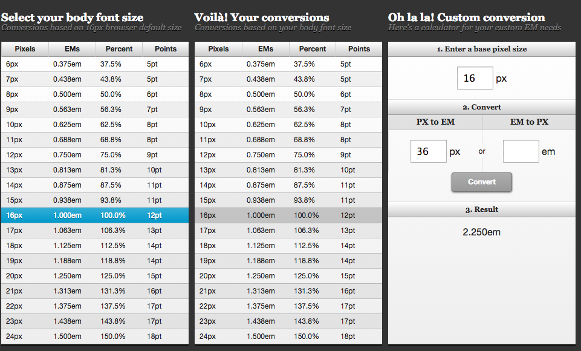Making it Responsive: Fonts
Let's open "styles.css" in Sublime Text.
Find all of the font-sizes that have px and convert them to the correct em sizes.
We'll go through them one by one on the next few slides.
Use the formula
target ÷ context = result
or use the pxtoem.com chart/calculator
Making it Responsive: Fonts
So we can keep track of what we changed, let's comment out the original px font-sizes when we add in our newly calculated em sizes.
Here's our first conversion as an example.
Let's convert the h1 font-size.
Making it Responsive: Fonts
Let's convert the h2 font-size.
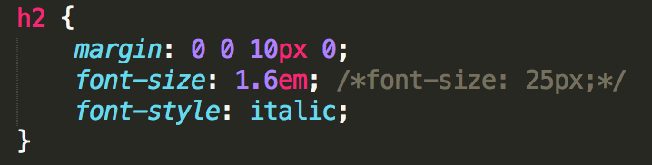And the .summary p font-size.
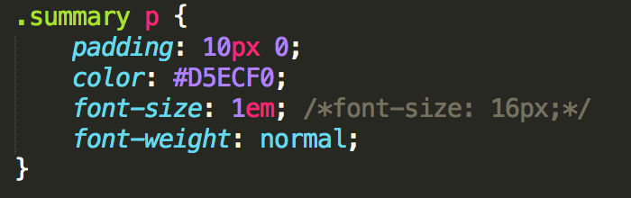Making it Responsive: Font sizes.
And lastly let's convert the aside p and the footer font-sizes.
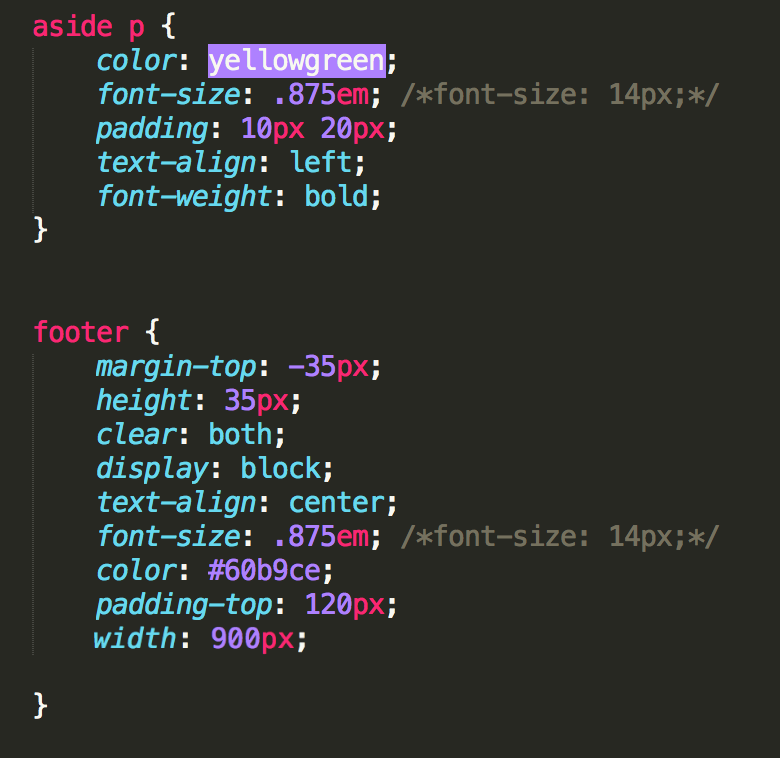Wasn't that FUN?
It wasn't horrible, at least our fonts are now flexible.
And now we have a reminder of why it's better to start off with ems right from the start.
Making it Responsive: A Fluid Grid
We still have fixed-width sizing on the structural containers (wrapper, nav, gallery, etc.).
By converting their pixel widths to percentages, we'll be another step closer.
Making it Responsive: A Fluid Grid
The same formula we used to convert fonts from px to ems can be used to convert pixel widths to percentages.
target ÷ context = result
The wrapper around our content is 900px wide, that's our target. Let's say the layout was designed to be 960px wide, that's our context. To convert the wrapper to a percentage, we do the math.
900 ÷ 960 = .09375
Move the decimal over two spots for the percentage.
Our 900px wrapper is now 93.75%
To save time, we're skipping the math.
Since we have a lot of nested containers in our working site, and want to keep this moving, we're going to make some arbitrary conversions and not do all the math on each one.
We'll use some nice round numbers, which is just fine for our single-page site.
Making it Responsive: A Flexible Foundation.
Let's go back to "styles.css" and start identifying our fixed-width containers.
Making it Responsive: A Flexible Foundation.
In order to keep track of what we changed, let's comment out the original pixel widths as we replace them with percentages.
We'll go through them one by one on the next few slides.
Let's convert the wrapper and the header widths.
On #wrapper we should also change the margin from px to percentage.
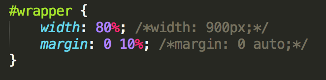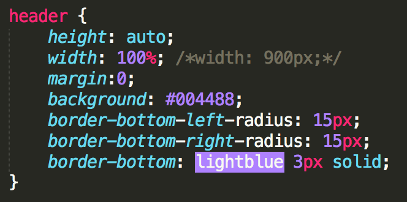
Let's convert the nav and the nav li widths.
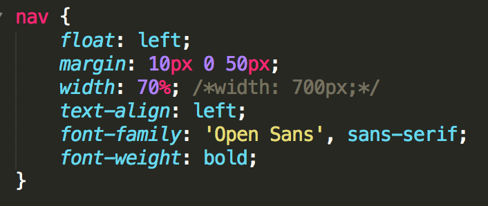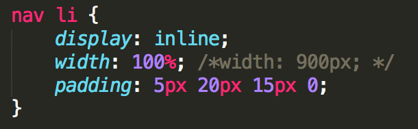
Let's convert the #social and the .summary widths.
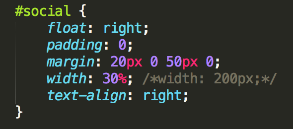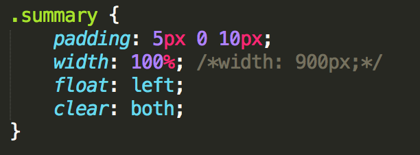
Let's convert the #feature img and the #gallery widths.
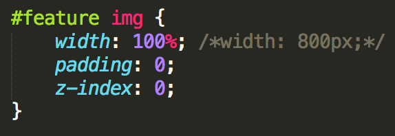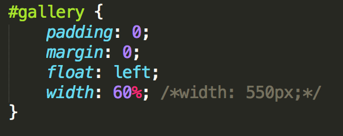
Let's convert the #thumbs li, #thumbs li img, and the aside widths.

Let's convert the #footer width and add a max-width to images.
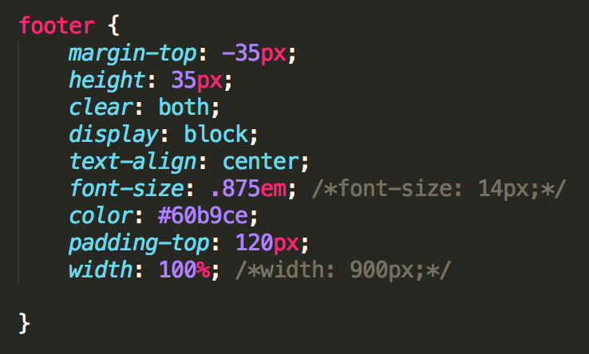Check out your site now!
Do things look better?
Let's take some time to get things right before we move on.
If you need to catch up, you can copy and paste the styles.css from our finished-responsive-website folder:
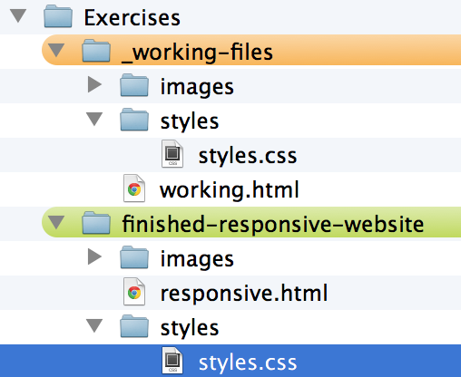Any questions before we jump into Media Queries?
Media Queries
If you've ever created a print stylesheet for a website (media="print") then you're already familiar with the idea of creating a specific stylesheet that comes into play under certain conditions.

If you can write CSS, you can write Media Queries
Media Queries are just an extra layer of instructions that work alongside your existing CSS. These instructions come into play when certain constraints are defined:
- width and height (browser window or device viewport)
- orientation (landscape or portrait mode)
- resolution (retina display)
Media Queries
They look only slightly different than regular CSS, just note the extra set of curly brackets.
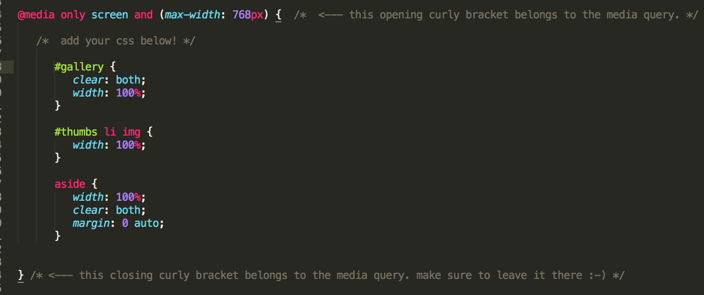
So let's write some Media Queries!
We can make a few small changes to our sample website right now and see what happens.
Let's go back to our styles.css file.
Adding Media Queries
Since all of the CSS we've written so far looks best on mostly the desktop view, let's customize it a bit for a smaller screen, like a tablet.
Adding Media Queries
At the very bottom of our styles.css, type the following:
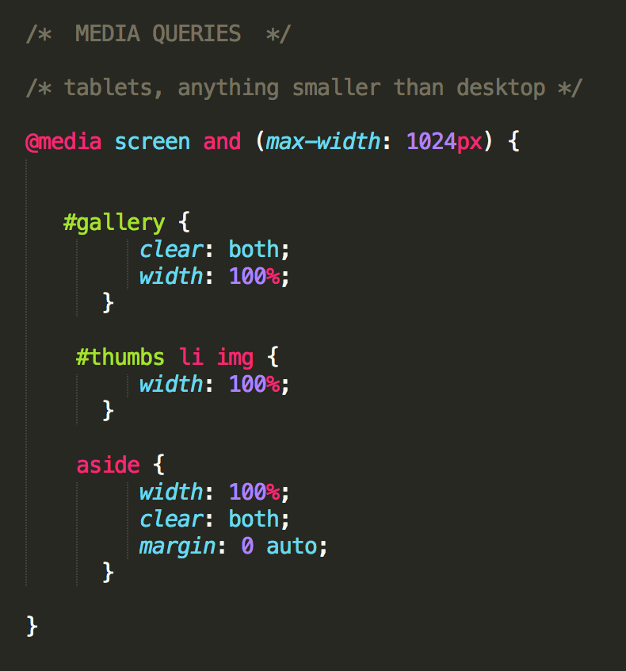Adding Media Queries
Adding Media Queries
Basics accomplished!
Now we have a very basic, responsive website. We could keep adding and adding to this, but we're going to move on to learning about process.
Bonus!
As our content readjusts at each breakpoint, the change can be abrupt. Though users might not notice it, it's a subtle way to soften the transitions.
Add the following to the bottom of your CSS, save, refresh your website, and resize the browser to see the difference:
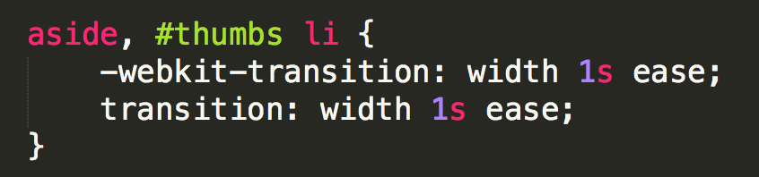Starting from scratch: Framework
Maybe it turns out you've got a site that's going to be a bit more complex, or you just want to start with a clean slate.
Here's where responsive frameworks come in.
Frameworks give us: The Grid
This is simply a 12-column flexible grid that can scale out to an arbitrary size (defined by the max-width of the row) that's easily nested. The widths are percentages. They've done the math for us!

Frameworks: Let's take a look at Foundation
Here's a framework to try out:
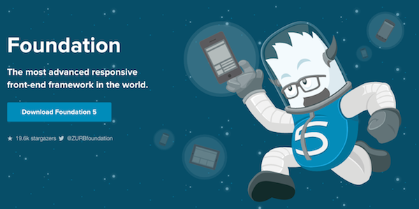Frameworks: Foundation
You should already have the Essential package downloaded, but if not, you can download it here:foundation.zurb.com/develop/download.html
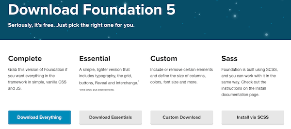Frameworks: Foundation
Let's go to the Foundation Essentials folder we downloaded and open index.html in our browser.
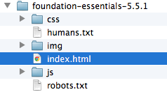Frameworks: Foundation
Check out the following chunks of code and their corresponding CSS by doing a right-click & inspect:
- div class="row"
- div class="large-12 columns"
- div class="large-4 medium-4 columns"
Frameworks: Foundation
Let's take a look at foundation.css file the Foundation Essentials folder. Open that in Sublime Text, and let's see how they've done their media queries.
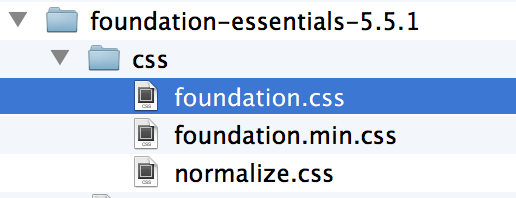Frameworks: Foundation
You'll notice their media queries are mixed in with the regular styles, so that they're grouped with other like items. In this case, we're dealing with columns.
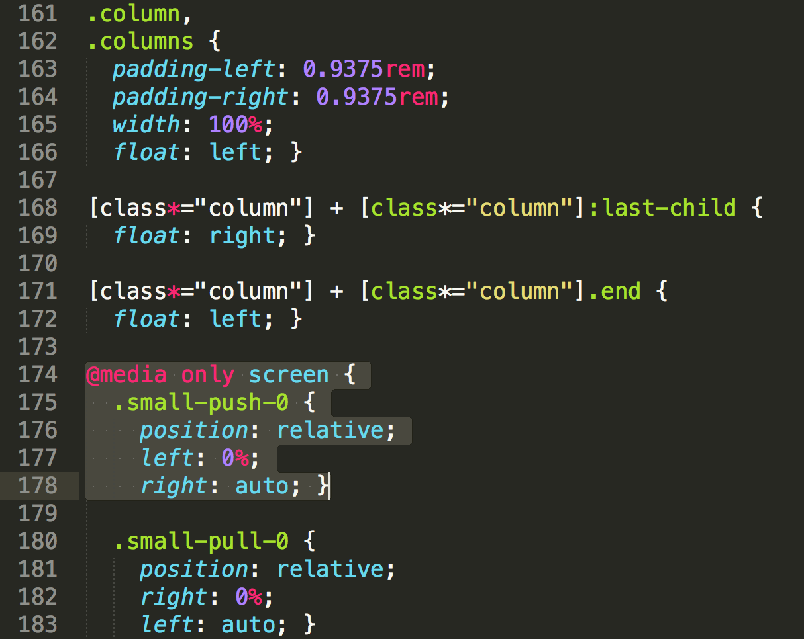Frameworks: Foundation
Let's start modifying this page so we can get used to working within the rows and columns of the grid.
Open index.html in Sublime Text.
Frameworks: Foundation
Change some text to your own, maybe start with the h1 and h2.
Frameworks: Foundation
Find the spot in the code where there are 3 columns of text. Let's say we want to delete one of them and just have 2 columns.
Since these 3 columns are each given a class of "large-4 medium-4" we have 3 x 4 = 12.
If we delete one of the divs and rename the other two "large-6 medium-6" so that they still add up to 12, see what happens.
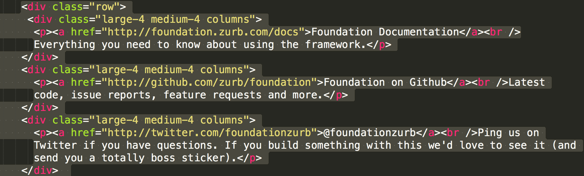Frameworks: Foundation
If we want to change some styling, we should create a new CSS file so any add-ons will be separate from the existing huge CSS file.
Open a new document in Sublime Text and save it in the CSS folder inside foundation-essentials. Name it whatever you like. Don't forget to link the new CSS file to your HTML file.
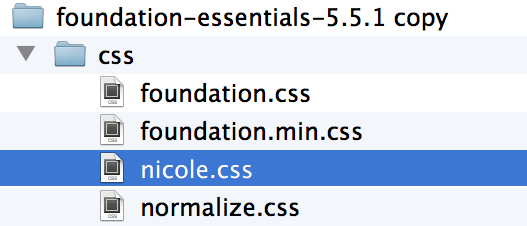Frameworks: Foundation
Try adding some color to these classes, or any other ones that you like.
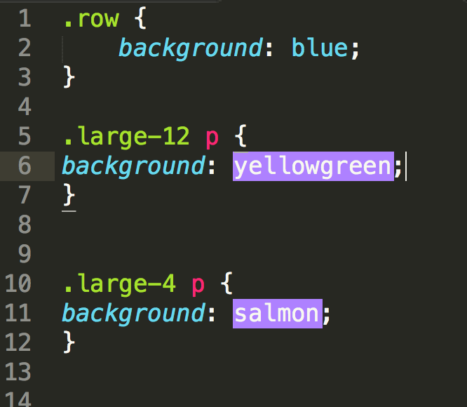Frameworks: Foundation
Once you get comfortable with the way the columns are nested, you'll soon see how you can adapt your own designs into a page like this Foundation starter page.
There are other downloads that include much more, including a custom download option, so be sure to try those too.
Process: It Starts with Mobile First
Mobile First helps us to:
- embrace simplicity
- get out of our comfort zone and be forced to innovate
- eliminate the bells and whistles (there's no room for them)
- prioritize content
It makes us better designers and developers, and our users will be grateful for it.
How to be Mobile First
It requires a shift in how we think about content.
Really, it's content first. Presenting only the most relevant content to begin with, so that none of it is treated as fluff that needs to be hidden from users.
How to be Mobile First
Here's a high-level glance at the Responsive Design and Mobile first process.

Content & Wireframes
Creates a blueprint for designers and devs.
- Requirements gathered
- Copy is written (thoughtfully!)
- Wireframes are created
Prototypes
Great for identifying the pain points before visual design starts.
- Many wireframing tools now support Responsive
- Responsive frameworks help us quickly create prototypes
- Interacting with screens in the browser lets you get feedback from others sooner
- Dramatically reduces time spent in Photoshop
Designing on paper templates
Helps sort out the priority and proximity of content. At the very least, it's an exercise that helps clarify what matters the most.

Designing with Style Tiles
Style Tiles. More refined than a mood board. Less detailed than a website mockup or comp.
The style tile below eventually became the website on the right.

Designing a PSD Deliverable
Development using Responsive Frameworks
After receiving design deliverables (style tiles, mobile/desktop mockups), development starts.
The starting point can be a responsive framework, or a responsive template in your CMS of choice.
Frameworks
- Foundation
- Bootstrap
- HTML5 Boilerplate
CMS Templates
- WordPress
- Joomla
- Concrete5
Is there anything that Responsive is NOT?
Responsive is not a replacement for mobile apps, and is not always the go-to solution.
We should assume that people will try to view a website on whatever device they have with them. It's up to us to provide the appropriate solutions for each app, website, and use case.
This is beyond Responsive
Sometimes there's another strategy happening, intentional or otherwise. Here's what Target has going on.
An m-dot mobile site, native app, full website on mobile, Cartwheel:


Responsivize Responsibly
We have a responsibility to do the right thing for our users. It's not an easy job, but you've all taken the first step in helping improve the web just by being here!
Go forth and tackle your next project with a fresh perspective!
Thank you! Questions?

aisha.g.blake@gmail.com
Twitter: @AishaBlake
leeann@girldevelopit.com
Twitter: @LeeannDrees
Resources
Upcoming Events: Join Us!
6/6 & 6/7: How to Build a Website: HTML & CSS for Beginners
6/14: Code & Tea
6/20: Intro to Programming Concepts
6/27 & 6/28: Intro to Ruby